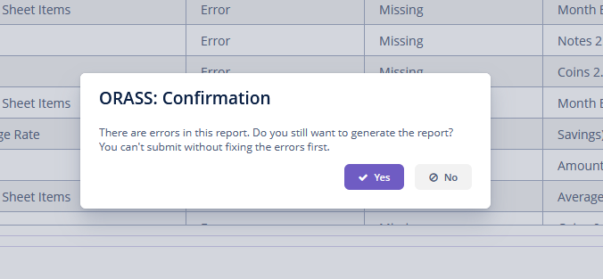
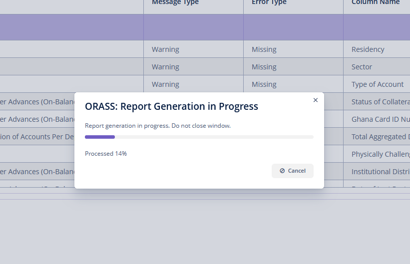
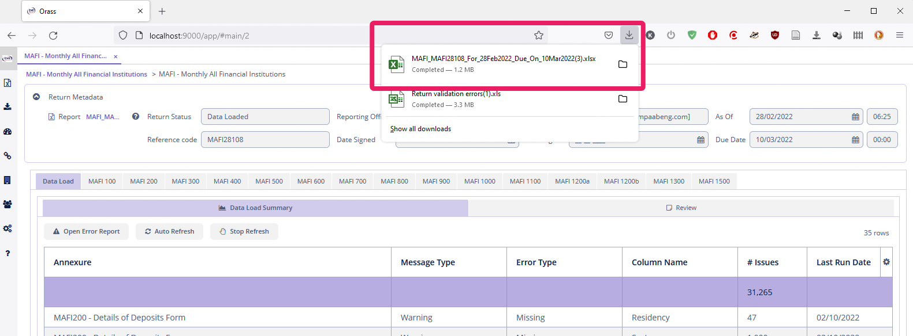

Report Generation
After loading data and reviewing the data it is time to populate the BoG templates with the data.
Overview
Populate the BoG templates with the valid data that has been loaded. All returns have empty templates attached to them, and they are populated during the report generating process.
Generate Report
To generate the report:
-
Select the return from the
Return Listbrowser and open in edit mode. -
In the
Action Barclick the button to start the report generation process. -
If the return has unresolved errors, you will receive a warning and be asked to confirm whether to proceed. If you see such a warning, it means the Administrator has enabled report generation and submission even when there are errors. However, if there are errors, BoG will reject the return.

-
If there are no errors in the return, or you decide to proceed after a warning, the following window will pop up showing the progress of the report generation.

Depending on the volume of data, the report generation process might take some time.
-
The report will be automatically downloaded when the process is complete. The location will vary depending on the browser. The image below shows the Firefox location. The report name follows a convention. The characters before the first underscore (_) represent the return type. The next block of characters represent the BoG reference code followed by the
As Of Dateand then theDue Date.

-
Open and examine the results in Microsoft Excel to ensure all data are correctly loaded.
-
You can also download the generated report in two ways.
-
In the
Action Barselect or -
In the
Metadatasection at the top of the screen, click the file
-